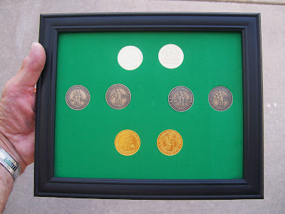

Rare Coin Display
7/13/2011
{kind=link}

I made up two only of these 8 x 10 framed collector coin displays with both obverse and reverse sides of all four ventriloquist coins on display for the viewer. The coins are mounted behind glass in art foam material without glue to ensure they remain in mint condition. I have one unit for sale through this blog and the other is on display and for sale at Lee Cornell's Convention dealer table as I write this.The golden 2011 Convention Coin is displayed upper most. Today is the official release date of this beauty and each convention registrant will find one as a gift in their registration packets.
At left in the middle row is the 2010 $5.00 Dummy Dollar Coin, now available only on the secondary market. It is their rare and short supply that limited the number of displays of this type I was able to make. Already this coin is selling at several times its face value.
On the middle row right is the 2011 $7.00 Dummy Dollar Coin, generally referred to as the 7/11 coin. Over time this coin could prove to be the most valuable of the lot since it represents the collector coin with lowest number in circulation (less than 100 at this time).
At the bottom of the framed display is the 2011 TWO CENT Ventriloquist Coin, which was perhaps the most fun for me to produce because so many readers of this blog were involved in the creation of the coin slogans. Also the fact that both the old original plus the modern NAAV logos appear on this coin only. Thanks to the assistance of Dr. Jeff Scott, all ventriloquists attending the FCM Conference in Marion, Indiana this week will receive one of these coins as a gift. Taking inspiration from Hansel and Gretel, I also, most days, in variety of ways, leave a trail of these coins wherever I go. And a couple TWO CENT pieces are packed with every order I ship.
If you are interested in purchasing the eight coin display shown above (made up of one pair each of the 4 coins described), the price is $60 plus $8.00 shipping Priority Mail.